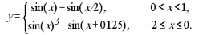
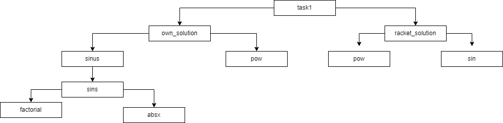
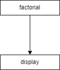
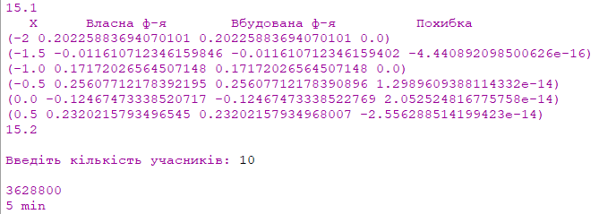
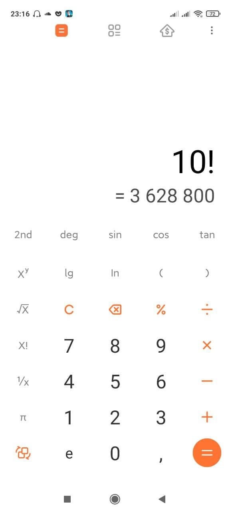

київський національний університет ім. Тараса Шевченка
факультет інформаційних технологій
кафедра програмних систем та технологій
Дисципліна
Функціональне програмування
Лабораторна робота №2
"Рекурентні співвідношення для тригонометричних, експоненціальних функцій та ланцюгові дроби"
Варіант 15
Виконав: Мухатасов Борис Євгенович
Перевірила: Ніколаєнко Анастасія Юріївна
Мета
Опанувати теоретичні основи застосування рекурентних співвідношень для обчислення тригонометричних, експоненціальних, степеневих функцій та розробити програми функціональними мовам програмування для обчислення їх значень.
Умови задачі
Написати процедури, що обчислюють задану функцію за допомогою рекурентних послідовностей, розвинувши її у ряд Маклорена (абоТейлора).
-
Обчислити значення функції у, розвинувши функцію sin(x) у ряд Тейлора. Аргумент х змінюється від -2 до 2 з кроком 0.5. Визначити

-
Учасники лижних змагань стартують з інтервалом 30 секунд. Щоб визначити порядок старту, спортсмени тягнуть жереб, який вказує номер старту. Визначити кількість різних послідовностей виходу лижників на старт, якщо в змаганнях брало участь n осіб. Через який проміжок часу всі спортсмени будуть на лижах? Значення кількості спортсменів n вводити з клавіатури.
Структура програми

Рис. 1 - HIPO діаграма до завдання №1

Рис. 2 - HIPO діаграма до завдання №2
Обгрунтування вибору середовища та мови функціонального програмування
Була обрана мова програмування Scheme, так як вона має легкий, зрозумілий синтаксис, який поюснюють на лекціях, практичних, а також рекомендована лектором. IDE - DrRacket. Головною перевагою для вибору данного середовища розробки є зручність та відсутність потреби у мережі інтернет
Код програми
(define (factorial num);зовнішня ф-я знаходження факторіала
(define (fac num result); внутрішня ф-я факторіала
(if (= num 0);якщо число стає нулем то повертаємо результат
result
(fac (- num 1) (* num result))));якщо ні,то викликаємо нову ітерацію функції
(fac num 1)); виклик зовнівньої ф-ї
;----------------------------------------------------------------------------------------------------
(define (pow x y); зовнішня ф-я обрахування х в степені у
(define (pow_inside x y res);внутрішня ф-я обрахування х в степені у
(if (= y 1); якщо у=1, тобто всі ітерації зроблені, то повертаємо результат
res
(pow_inside x (- y 1) (* res x))));викликаемо нову ітерацію
(pow_inside x y x))
;-----------------------------------------------------------------------------------------------------
(define (absx num);модуль числа
(if (< num 0)
(* num -1)
num))
;-----------------------------------------------------------------------------------------------------
(define (sinus x);зовнішня ф-я обрахунку синуса розкладаннямна ряд тейлора
(define (sins x res step);внутрішня ф-я обрахунку синуса розкладаннямна ряд тейлора
(if (< (absx (/ (pow x (- (* 2 step) 1)) (factorial step))) 0.000001);Перевірка досяжності необхыдної точності
res
(sins x (+ res (* (pow -1 step) (/ (pow x (+ (* 2 step) 1)) (factorial (+ (* 2 step) 1))))) (+ step 1))))
(sins x x 1)
)
;----------------------------------------------------------------------------------
(display "15.1\n")
(define (own_solution x)
(if (and (< 0 x) (< x 1));якщо х підпадає під першу умову
(- (sinus x) (sinus (/ x 2)))
(if (and (<= -2 x) (<= x 0));якщо х підпадає під другу умову
(- (pow (sinus x) 3) (sinus (+ x 0.125))))))
;-----------------------------------------------------------------------------------
(define (racket_solution x);перевірка правильності результату за допомогою влаштованої ф-ї обрахування синусу
(if (and (< 0 x) (< x 1));якщо х підпадає під першу умову
(- (sin x) (sin (/ x 2)))
(if (and (<= -2 x) (<= x 0));якщо х підпадає під другу умову
(- (pow (sin x) 3) (sin (+ x 0.125))))))
;-----------------------------------------------------------------------------------
(define (task_1 x)
(define step_row (list x))
(if (< x 1)
(begin
(display (list x (own_solution x) (racket_solution x) (- (own_solution x) (racket_solution x))))
(display "\n")
(task_1 (+ x 0.5))
)))
;------------------------------------------------------------------------------------
(display " X Власна ф-я Вбудована ф-я Похибка\n")
(task_1 -2)
;------------------------------------------------------------------------------------
(display "15.2\n\n")
(display "Введіть кількість учасників: ")
(define n(read));кількість учасників змагань
(display "\n")
(display(factorial n)); обраховуемо кількість послідовностей
(display "\n")
(display (/ (* n 30) 60)); знаходимо час у хвилинах, через який всі спортсмени будуть на лижах
(display " min")
(display "\n")
Посилання на проект з вихідним кодом
GitHub проект з вихідним кодом до всіх лабораторних
Скріншоти результатів

Рис. 3 - Результат виконання завдання
Аналіз достовірності результатів
З скріншоту результатів видно, що обраховані рядом тейлора значення синуса співпадають з значеннями, обрахованими вбудованою функцією, з деякою похибкою, отже результат вірний
Для рішення завдання, потрібно було знайти к-ть перестановок P. Його знайдено програмою вірно, оскільки результат спіпадає з квлькулятором

Висновки
В результаті роботи було вирішено два задання за допомогою мови Scheme. Було намальовано HIPO діаграми для кожного з завдань, проведено аналіз достовірності результатів, який показав що результати є вірними.